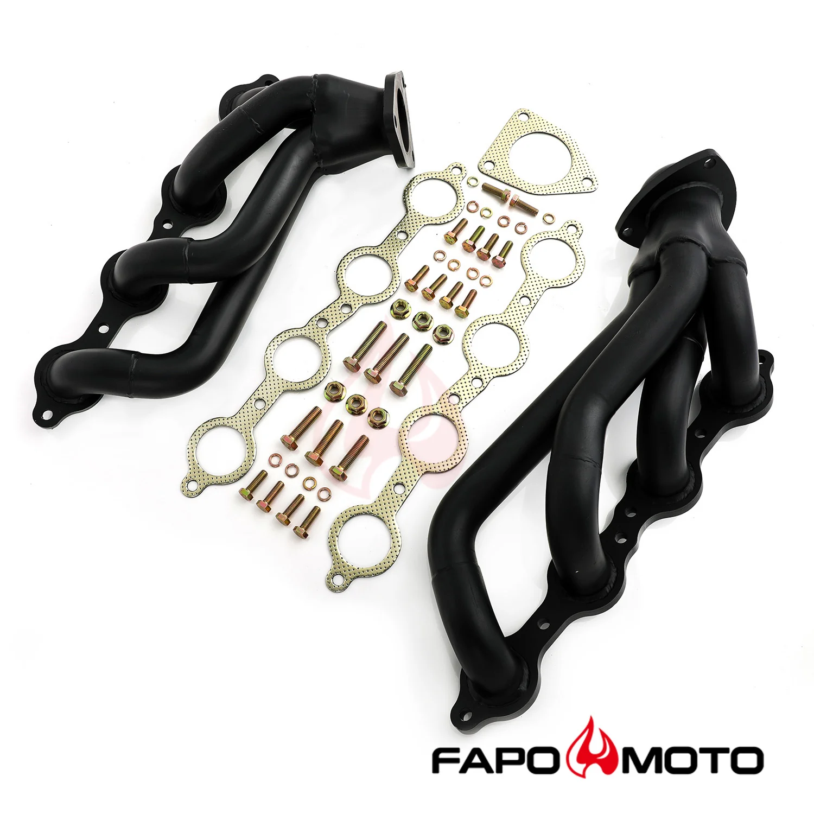

1 / 7Kolektor wydechowy shorty Kompatybilne z 02-13 Silverado Sierra 1500 2500 Tahoe Yukon Suburban Escalade BLACK V8 304 Stainless FE696130
Aplikacja Chevy GMC Silverado, Sierra, Tahoe, Yukon 4,8 l, 5,3 l, 6,0 l, 6,2 l Chevy GMC 2002-2013 Tahoe, Yukon, podmiejskie, Escalade 4,8 l, 5,3 l V8 Chevy GMC 2007-2013 Tahoe, Yukon, podmiejski, Escalade SUV 6.0L, 6.2L Chevy GMC 2007-2013 Silverado, Sierra 1500/2500 Ciężarówka 6,0 l, 6,2 l Chevy GMC 2002-2013 Silverado, Sierra Pickup 4,8 l, 5,3 l V8 Cechy Doskonała jakość i trwałość poprawiająca osiągi pojazdu Kró…
Application Chevy GMC Silverado, Sierra, Tahoe, Yukon 4.8L, 5.3L, 6.0L, 6.2L Chevy GMC 2002-2013 Tahoe, Yukon, Suburban, Escalade 4.8L, 5.3L V8 Chevy GMC 2007-2013 Tahoe, Yukon, Suburban, Escalade SUV 6.0L, 6.2L Chevy GMC 2007-2013 Silverado, Sierra 1500/2500 Truck 6.0L, 6.2L Chevy GMC 2002-2013 Silverado, Sierra Pickup Truck 4.8L, 5.3L V8 Features Excellent quality and durability to improve vehicle performance Shorty design for power gain from idle to mid-range RPM Fully mandrel bent tubes made of high quality 16-gauge Mild Steel Head flanges laser-cut from high quality 3/8-inch thick steel plates The flange is flattened by a hydraulic press for precise and leak free sealing All joints are golden color TIG brass style welded to prevent cracking and wear Flanges chrome plated for corrosion resistance Black paint coating, can withstand up to 500°F The accessories in the photos are included 1 year warranty for any manufacturing defect Technical Specifications Header Type: Shorty / Short Tube Primary Diameter: 1-7/8 in. Collector Diameter: 2-1/2 in. Head Flange Thickness: 3/8 in. (9.5mm) Pipe Thickness: 16 gauge (1.5mm) Material: Mild Steel Finish: Black Paint
1399,99 PLN
Opis produktu
Aplikacja
- Chevy GMC Silverado, Sierra, Tahoe, Yukon 4,8 l, 5,3 l, 6,0 l, 6,2 l
- Chevy GMC 2002-2013 Tahoe, Yukon, podmiejskie, Escalade 4,8 l, 5,3 l V8
- Chevy GMC 2007-2013 Tahoe, Yukon, podmiejski, Escalade SUV 6.0L, 6.2L
- Chevy GMC 2007-2013 Silverado, Sierra 1500/2500 Ciężarówka 6,0 l, 6,2 l
- Chevy GMC 2002-2013 Silverado, Sierra Pickup 4,8 l, 5,3 l V8
Cechy
- Doskonała jakość i trwałość poprawiająca osiągi pojazdu
- Krótka konstrukcja zapewniająca wzrost mocy od obrotów biegu jałowego do średnich obrotów
- Rury w pełni gięte trzpieniowo, wykonane z wysokiej jakości stali miękkiej o średnicy 16 mm
- Kołnierze głowicy wycinane laserowo z wysokiej jakości blach stalowych o grubości 3/8 cala
- Kołnierz jest spłaszczany za pomocą prasy hydraulicznej, co zapewnia precyzyjne i szczelne uszczelnienie
- Wszystkie połączenia są spawane metodą TIG w kolorze złotym, aby zapobiec pękaniu i zużyciu
- Kołnierze chromowane, co zapewnia odporność na korozję
- Czarna powłoka lakiernicza, wytrzymuje temperaturę do 500°F
- Akcesoria widoczne na zdjęciach są wliczone w cenę
- 1 rok gwarancji na wszelkie wady produkcyjne
Dane techniczne
- Typ nagłówka:Krótka / Krótka rurka
- Podstawowa średnica:1-7/8 cala
- Średnica kolektora:2-1/2 cala
- Grubość kołnierza głowicy:3/8 cala (9,5 mm)
- Grubość rury:Średnica 16 (1,5 mm)
- Tworzywo:Łagodna stal
- Skończyć:Czarna farba
Application
- Chevy GMC Silverado, Sierra, Tahoe, Yukon 4.8L, 5.3L, 6.0L, 6.2L
- Chevy GMC 2002-2013 Tahoe, Yukon, Suburban, Escalade 4.8L, 5.3L V8
- Chevy GMC 2007-2013 Tahoe, Yukon, Suburban, Escalade SUV 6.0L, 6.2L
- Chevy GMC 2007-2013 Silverado, Sierra 1500/2500 Truck 6.0L, 6.2L
- Chevy GMC 2002-2013 Silverado, Sierra Pickup Truck 4.8L, 5.3L V8
Features
- Excellent quality and durability to improve vehicle performance
- Shorty design for power gain from idle to mid-range RPM
- Fully mandrel bent tubes made of high quality 16-gauge Mild Steel
- Head flanges laser-cut from high quality 3/8-inch thick steel plates
- The flange is flattened by a hydraulic press for precise and leak free sealing
- All joints are golden color TIG brass style welded to prevent cracking and wear
- Flanges chrome plated for corrosion resistance
- Black paint coating, can withstand up to 500°F
- The accessories in the photos are included
- 1 year warranty for any manufacturing defect
Technical Specifications
- Header Type: Shorty / Short Tube
- Primary Diameter: 1-7/8 in.
- Collector Diameter: 2-1/2 in.
- Head Flange Thickness: 3/8 in. (9.5mm)
- Pipe Thickness: 16 gauge (1.5mm)
- Material: Mild Steel
- Finish: Black Paint
FAPO Polska
Ten produkt obsługujemy lokalnie
Autoryzowana obsługa
FAPO Polska prowadzi katalog, kontakt i zamówienia bez odsyłania klienta do zewnętrznych sklepów.
Dobór po aucie
Sprawdzamy dopasowanie produktu do pojazdu, rocznika i wersji przed finalizacją zamówienia.
Wsparcie po zakupie
Masz kontakt w Polsce w sprawach zamówień, wysyłki, gwarancji i zwrotów.